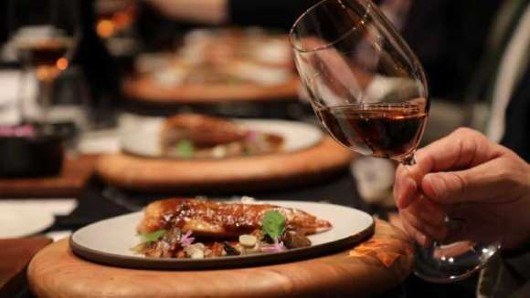
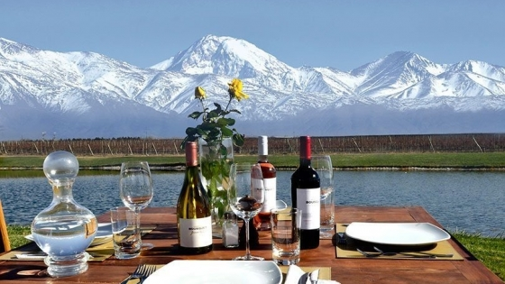
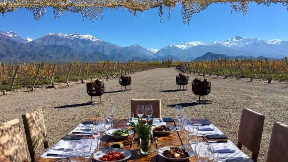
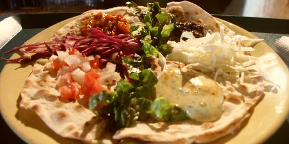

Alrrededores:

Rincón Suizo - Restaurante y Salón de Té
El maridaje de comida con buenos tragos y una excelente carta de vinos, Queremos que pasen una agradable y especial noche.
Bodega Nortón:

Agrelo, Luján de Cuyo
Te esperamos con platos únicos que hablan por sí solos. Con tragos de autor y entradas para compartir. Vinos exquisitos de nuestra bodega.
Finca Diaz:

Lavalle, Mendoza
Gastronomía criolla y noches de sábado con la mejor peña de Mendoza. Estamos ubicados en el corazón de Lavalle donde podrás disfrutar de todo su entorno.
Chacras Park:

Chacras de Coria, Luján de Cuyo
En familia, creemos en la cocina autóctona, ancestral y sin muchas vueltas.